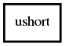

ushort
Object Hierarchy:

Description:
[ SimpleType ]
public struct ushort
Package: glib-2.0
Content:
Static methods:
- public static ushort min (ushort a, ushort b)
- public static ushort max (ushort a, ushort b)
Methods:
Fields:
- public static ushort MIN
- public static ushort MAX